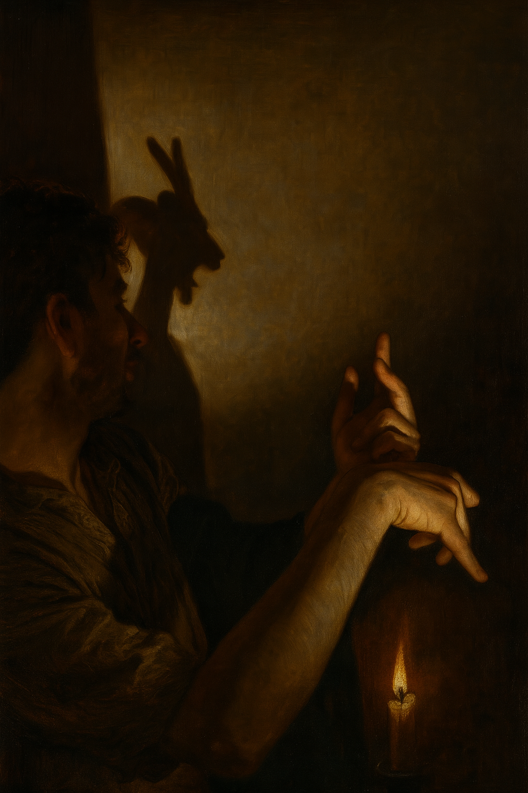
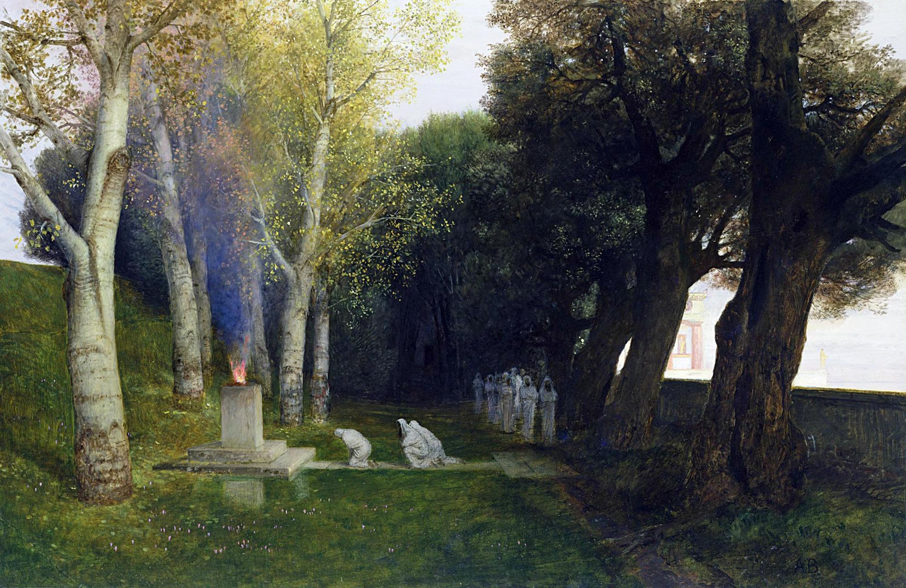

L'adattamento dell'uomo comune, di buon senso ed equilibrato, comporta un rifiuto continuo e sistematico di molti aspetti interiori della natura umana, sia cognitivi che conativi. Adattarsi al mondo reale presuppone una divisione della persona, la quale volta le spalle a gran parte della propria interiorità perché la percepisce come pericolosa. Tuttavia, oggi sappiamo che, facendo così, si perde anche molto altro: queste stesse interiorità rappresentano infatti la fonte di ogni gioia, della capacità di amare, di giocare, di ridere e, aspetto per noi ancora più importante, di creare. Nel difendersi dall'inferno che custodisce dentro di sé, l'individuo finisce per separarsi anche dal cielo che vi abita. Nei casi estremi ci troviamo di fronte a una persona ossessionata, monotona, tesa, rigida, fredda, controllata, cauta, incapace di ridere, di giocare o di amare, così come di comportarsi con ingenuità, fiducia o spontaneità infantile. La sua immaginazione, le sue intuizioni, la sua delicatezza e la sua emotività tendono a essere represse o falsificate.(Maslow)
Qui puoi inserire il tuo secondo testo. Quando avrai finito di leggerlo, la pagina si aprirà verso la fine...
